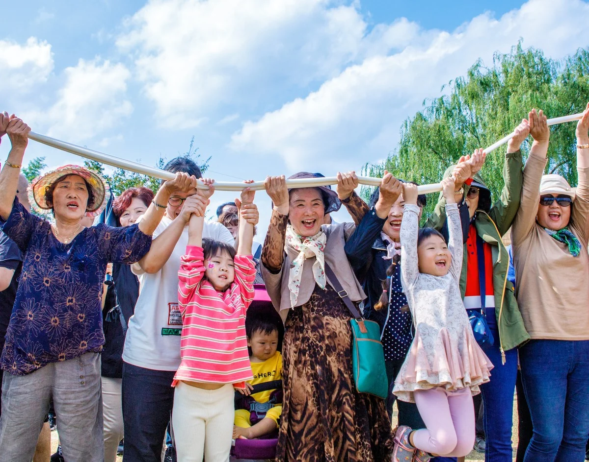

Titre donné par le photographe
Voir dans l'exposition 3D Télécharger le fichier original

Comment créditer
Yumok (流木) Lee Dong-joo, « Vive le gâteau de riz de Gimje », 2019. CC BY 4.0, seungheon.com
Photographies de lumière d'eau de Yumok
Prix de bronze au concours national de prise de vue du Festival de l'Horizon de Gimje, 2019 · 2019
Distinctions
Titre donné par le photographe
Voir dans l'exposition 3D Télécharger le fichier original
Yumok (流木) Lee Dong-joo, « Vive le gâteau de riz de Gimje », 2019. CC BY 4.0, seungheon.com